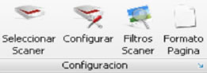
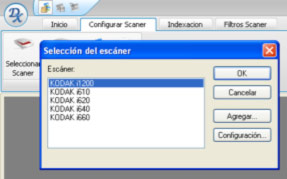
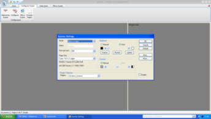
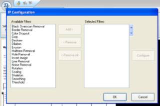
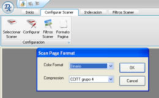

| Seleccione el tema sobre el que necesita ayuda. |
| Inicio |
| SIMADIG 1.0 Configurar Escaner |
A través de este modulo se selecciona el scaner para realizar la digitalización, se configuran los parámetros de digitalización, se aplican los filtros de scaner y se selecciona el tipo de papel a digitalizar.

Usted debe seguir estos pasos para configurar su escaner:
Seleccionar Escaner
Seleccione el escaner conectado al equipo.

Configurar
Seleccione la configuración de las siguientes variables del scaner:
- Mode: escoger la opción de la digitalizacion; Color, blanco y negro ó grises.
- Dots Per Inch: Corresponde a los DPI por pulgada como se va a digitalizar el documento.
- Page Size: Seleccionar el tipo o medida de papel del documento a digitalizar.
- Región: Seleccionar la cara a digitalizad del documento: Anverso, anverso- reverso, atrás.
- Brightness: Seleccionar la calidad de brillo de la imagen: Manual o Automática.
- Manual: Darken, Normal, Lighten.
- Duplex: Confirmar si el documento se va a digitalizar por ambas caras.

Filtros de Escaner
Adicione los diferentes filtros disponibles para automatizar la digitalización, estos filtros se aplicaran a cada imagen digitalizada en forma automática.

Filtros Disponibles
ELEMENTO |
TRADUCCION |
Black Overscan Removal |
Eliminar Puntos Negros |
Border Removal |
Eliminar Bordes |
Color Dropout |
Omisión del color(utilizada para eliminar el fondo) |
Carpetas de papel |
Recortar Imagen |
Deskew |
Enderezamiento de Imagen |
Dilation |
Dilatar Imagen |
Halftone Removal |
Eliminación de medios tonos |
Erosion |
Erosionar Imagen |
Hole Removal |
Eliminar Orificios |
Invert Image |
Invertir imagen |
Line Removal |
Eliminar Lineas |
Noise Removal |
Eliminar Ruido |
Rotation |
Rotar |
Scaling |
Escala de la imagen |
Skeleton |
|
Smoothing |
Suavizado de la imagen |
Threshold |
Valor de umbral óptimo para producir la calidad de imagen más alta |
Formato de Página
Seleccione el formato del color y la compresión, es recomendable seleccionar la opción CCITT Grupo 4.
